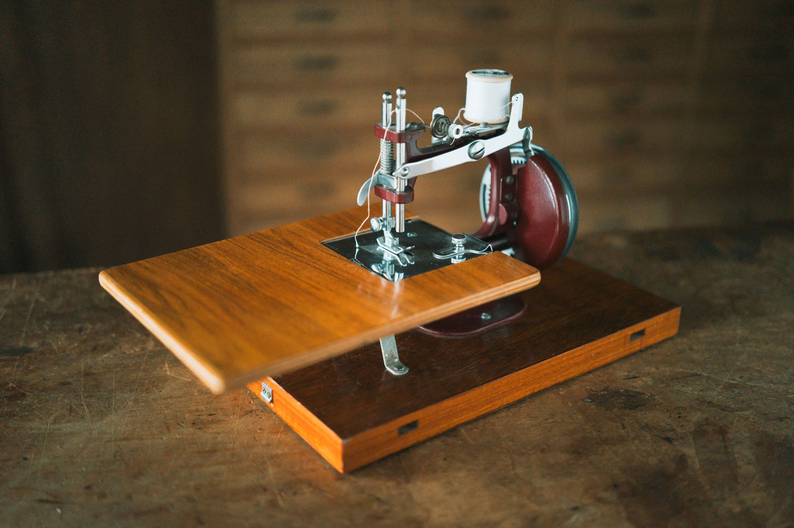
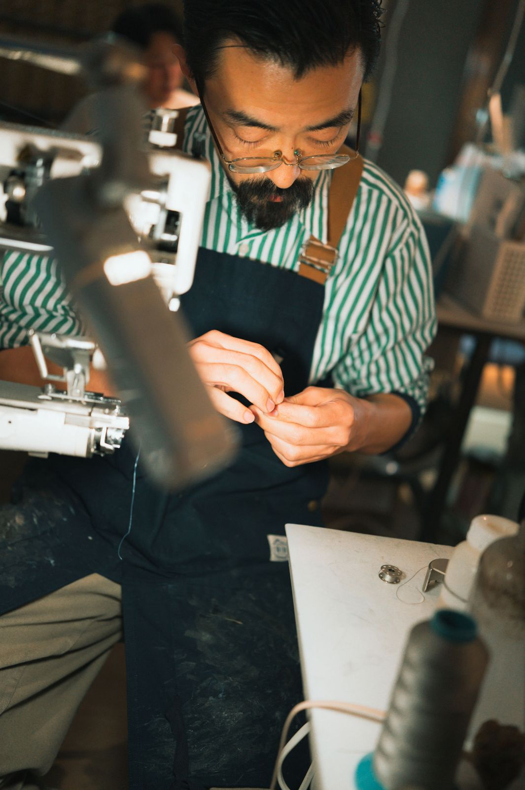
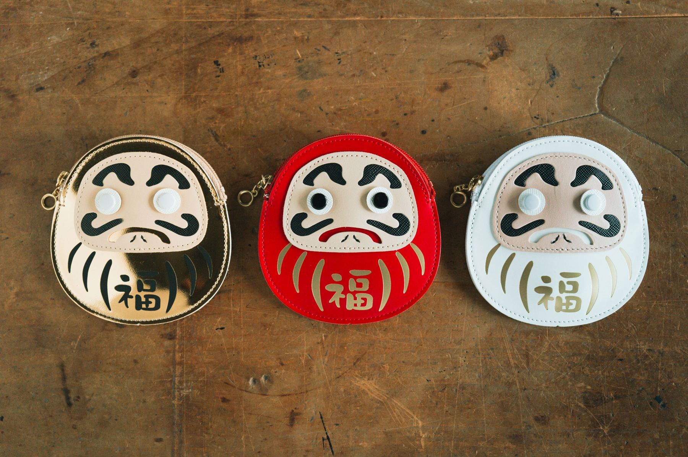
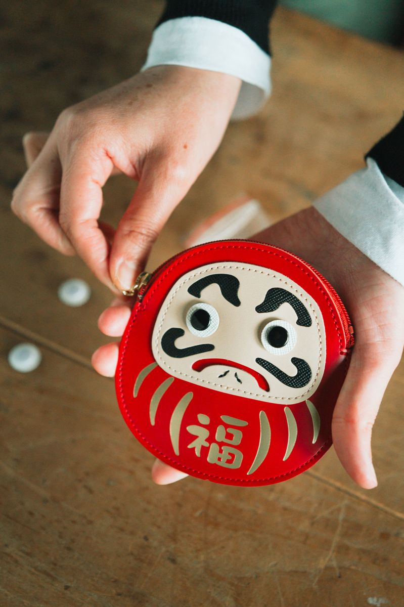

01
企画・設計のご相談
仕様が決まっていなくても大丈夫です。作りたいもの・時期・数量をうかがい、デザインの提案や製造上のアドバイスをしながら形にしていきます。



SINCE 1923 · HIGASHI-UENO, TOKYO
東京・東上野で百年あまり。革小物のOEM生産と、自社ブランドのものづくりを続けています。
革 × 職人技 × 東京の伝統
Message
大正12年、東京・東上野で創業しました。革小物メーカーとしては国内最大規模のサンプル室を持つ、OEM生産のプロフェッショナルです。
20〜70代という幅広い年代の職人が、どんなご依頼にも真摯に対応いたします。ときどき顔を見たくなる職人、ふっと立ち寄りたくなる製作所。そんな身近な存在でありたいと願っています。

革小物メーカーとして国内最大規模のサンプル室を持っています。確認：数字は現行サイトの表記。最新の値
Work · OEM
01
仕様が決まっていなくても大丈夫です。作りたいもの・時期・数量をうかがい、デザインの提案や製造上のアドバイスをしながら形にしていきます。

02
国内最大規模のサンプル室で、ていねいにサンプルを作ります。複数素材・複数デザインも製作し、納得いただけるまで調整します。

03
東上野の自社工房、または海外の協力工場で量産します。どちらも自社の専門スタッフが検品してお届けします。
Works
MUSEUM
ミュージアムグッズ
確認：掲載の許可RAILWAY
パスケース ほか
確認：掲載の許可CHARACTER
キャラクターグッズ
確認：掲載の許可RESTAURANT
コラボグッズ（社名は非公開）
確認：掲載の許可Media


Original Brand
だるま、招き猫、おにぎり、富士山。縁起物と東京のちいさな楽しみを、野村製作所の職人が革小物にしました。OEMで培った技術でつくる、自社ブランドです。
「黒子」。シュランケンカーフの軽さと手ざわりを生かした、日本の品格を感じさせる革小物のブランドです。確認：CROCCOを続けるか・販売先
詳しくAtelier & Shop
東上野のメゾン野村。2階が工房、1階がアトリエ兼ショップ「のむのもの。」です。近くにお越しの際は、気軽にお立ち寄りください。
For international partners
We welcome inquiries from brands and partners overseas. Tell us about your project — in English.
Contact
OEMのご相談、コラボレーション、取材・撮影協力、採用など、お気軽にご連絡ください。